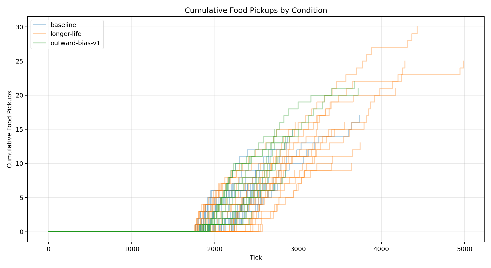
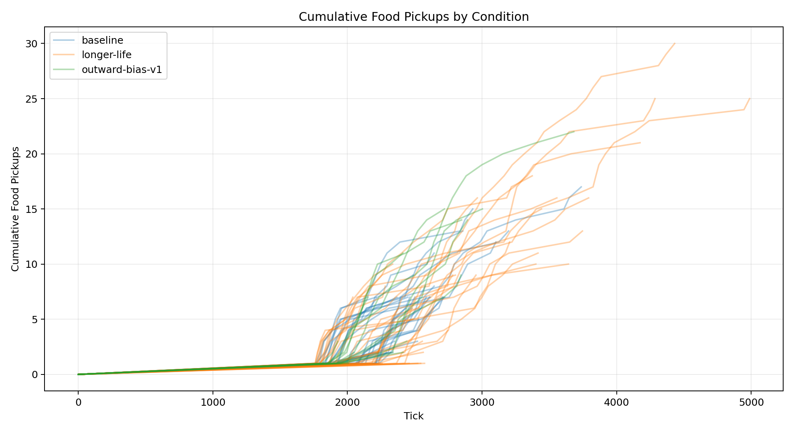

| Condition | Runs |
|---|---|
| baseline | 43 |
| longer-life | 43 |
| outward-bias-v1 | 20 |
| Metric | Conditions | Min | Max | Average | Median | Mode |
|---|---|---|---|---|---|---|
| analysis.delivered_food | 3 | 5.140 | 8.350 | 6.993 | 7.488 | none |
| analysis.delivered_food_per_day | 3 | 0.173 | 0.249 | 0.205 | 0.193 | none |
| analysis.final_day | 3 | 27.349 | 32.930 | 30.193 | 30.300 | none |
| analysis.final_tick | 3 | 2679.535 | 3239.814 | 2965.866 | 2978.250 | none |
| analysis.found_food | 3 | 5.233 | 8.450 | 7.072 | 7.535 | none |
| analysis.selected_move_count | 3 | 928.070 | 1470.605 | 1200.125 | 1201.700 | none |
| analysis.simulation_length | 3 | 995.535 | 1555.814 | 1281.866 | 1294.250 | none |
| analysis.steps_to_nth_food.1 | 3 | 160.300 | 322.943 | 239.061 | 233.941 | none |
| analysis.steps_to_nth_food.10 | 3 | 28.625 | 100.867 | 66.053 | 68.667 | none |
| analysis.steps_to_nth_food.11 | 3 | 46.750 | 109.500 | 74.194 | 66.333 | none |
| analysis.steps_to_nth_food.12 | 3 | 28.333 | 141.273 | 95.469 | 116.800 | none |
| analysis.steps_to_nth_food.13 | 3 | 22.833 | 157.750 | 83.961 | 71.300 | none |
| analysis.steps_to_nth_food.14 | 3 | 63.444 | 101.500 | 76.593 | 64.833 | none |
| analysis.steps_to_nth_food.15 | 3 | 67.778 | 181.500 | 122.676 | 118.750 | none |
| analysis.steps_to_nth_food.16 | 3 | 19 | 129.125 | 57.708 | 25 | none |
| analysis.steps_to_nth_food.17 | 3 | 45 | 70 | 61.067 | 68.200 | none |
| analysis.steps_to_nth_food.18 | 2 | 42 | 64.800 | 53.400 | 53.400 | none |
| analysis.steps_to_nth_food.19 | 2 | 34.250 | 90 | 62.125 | 62.125 | none |
| analysis.steps_to_nth_food.2 | 3 | 39.188 | 91.677 | 73.412 | 89.370 | none |
| analysis.steps_to_nth_food.20 | 2 | 47 | 105.750 | 76.375 | 76.375 | none |
| analysis.steps_to_nth_food.21 | 2 | 171.500 | 268 | 219.750 | 219.750 | none |
| analysis.steps_to_nth_food.22 | 2 | 66 | 114 | 90 | 90 | none |
| analysis.steps_to_nth_food.23 | 1 | 234.333 | 234.333 | 234.333 | 234.333 | none |
| analysis.steps_to_nth_food.24 | 1 | 261.333 | 261.333 | 261.333 | 261.333 | none |
| analysis.steps_to_nth_food.25 | 1 | 32 | 32 | 32 | 32 | none |
| analysis.steps_to_nth_food.26 | 1 | 28 | 28 | 28 | 28 | none |
| analysis.steps_to_nth_food.27 | 1 | 38 | 38 | 38 | 38 | none |
| analysis.steps_to_nth_food.28 | 1 | 390 | 390 | 390 | 390 | none |
| analysis.steps_to_nth_food.29 | 1 | 31 | 31 | 31 | 31 | none |
| analysis.steps_to_nth_food.3 | 3 | 45.731 | 63.680 | 52.426 | 47.867 | none |
| analysis.steps_to_nth_food.30 | 1 | 41 | 41 | 41 | 41 | none |
| analysis.steps_to_nth_food.4 | 3 | 14.917 | 65.917 | 46.986 | 60.125 | none |
| analysis.steps_to_nth_food.5 | 3 | 33 | 97.773 | 64.049 | 61.375 | none |
| analysis.steps_to_nth_food.6 | 3 | 32.167 | 93.739 | 65.667 | 71.095 | none |
| analysis.steps_to_nth_food.7 | 3 | 25.750 | 123.450 | 69.050 | 57.950 | none |
| analysis.steps_to_nth_food.8 | 3 | 30.600 | 95.053 | 66.292 | 73.222 | none |
| analysis.steps_to_nth_food.9 | 3 | 29.778 | 96.833 | 53.966 | 35.286 | none |
| analysis.steps_to_nth_queen.1 | 3 | 18.529 | 159.895 | 67.151 | 23.029 | none |
| analysis.steps_to_nth_queen.10 | 3 | 16.571 | 26.125 | 20.121 | 17.667 | none |
| analysis.steps_to_nth_queen.11 | 3 | 17.583 | 35.625 | 23.625 | 17.667 | none |
| analysis.steps_to_nth_queen.12 | 3 | 21.636 | 28.167 | 24.001 | 22.200 | none |
| analysis.steps_to_nth_queen.13 | 3 | 17.167 | 20.200 | 18.622 | 18.500 | none |
| analysis.steps_to_nth_queen.14 | 3 | 17.667 | 32.667 | 23.111 | 19 | none |
| analysis.steps_to_nth_queen.15 | 3 | 18 | 65 | 34.815 | 21.444 | none |
| analysis.steps_to_nth_queen.16 | 3 | 18 | 19.500 | 18.500 | 18 | 18 |
| analysis.steps_to_nth_queen.17 | 3 | 13 | 18 | 16 | 17 | none |
| analysis.steps_to_nth_queen.18 | 2 | 15.500 | 18.500 | 17 | 17 | none |
| analysis.steps_to_nth_queen.19 | 2 | 17.750 | 44 | 30.875 | 30.875 | none |
| analysis.steps_to_nth_queen.2 | 3 | 14.355 | 25.333 | 18.328 | 15.296 | none |
| analysis.steps_to_nth_queen.20 | 2 | 17.500 | 44 | 30.750 | 30.750 | none |
| analysis.steps_to_nth_queen.21 | 2 | 20 | 128.500 | 74.250 | 74.250 | none |
| analysis.steps_to_nth_queen.22 | 2 | 21.333 | 90 | 55.667 | 55.667 | none |
| analysis.steps_to_nth_queen.23 | 1 | 20.667 | 20.667 | 20.667 | 20.667 | none |
| analysis.steps_to_nth_queen.24 | 1 | 17.333 | 17.333 | 17.333 | 17.333 | none |
| analysis.steps_to_nth_queen.25 | 1 | 19 | 19 | 19 | 19 | none |
| analysis.steps_to_nth_queen.26 | 1 | 22 | 22 | 22 | 22 | none |
| analysis.steps_to_nth_queen.27 | 1 | 19 | 19 | 19 | 19 | none |
| analysis.steps_to_nth_queen.28 | 1 | 23 | 23 | 23 | 23 | none |
| analysis.steps_to_nth_queen.29 | 1 | 23 | 23 | 23 | 23 | none |
| analysis.steps_to_nth_queen.3 | 3 | 14.400 | 42.133 | 25.991 | 21.440 | none |
| analysis.steps_to_nth_queen.30 | 1 | 23 | 23 | 23 | 23 | none |
| analysis.steps_to_nth_queen.4 | 3 | 14.500 | 15.292 | 14.847 | 14.750 | none |
| analysis.steps_to_nth_queen.5 | 3 | 14.045 | 32.583 | 20.390 | 14.542 | none |
| analysis.steps_to_nth_queen.6 | 3 | 15.955 | 30.833 | 21.358 | 17.286 | none |
| analysis.steps_to_nth_queen.7 | 3 | 16.900 | 25.417 | 20.217 | 18.333 | none |
| analysis.steps_to_nth_queen.8 | 3 | 16.105 | 28.100 | 20.920 | 18.556 | none |
| analysis.steps_to_nth_queen.9 | 3 | 16.286 | 27.556 | 20.558 | 17.833 | none |
| day | 3 | 27.349 | 32.930 | 30.193 | 30.300 | none |
| delivered_food | 3 | 5.140 | 8.350 | 6.993 | 7.488 | none |
| egg_hatched | 3 | 1 | 1 | 1 | 1 | 1 |
| egg_laid | 3 | 1 | 1 | 1 | 1 | 1 |
| eggs | 3 | 0 | 0 | 0 | 0 | 0 |
| found_food | 3 | 5.233 | 8.450 | 7.072 | 7.535 | none |
| players | 3 | 0 | 0 | 0 | 0 | 0 |
| queens | 3 | 1 | 1 | 1 | 1 | 1 |
| randomized_seed | 3 | 1776977523393.372 | 1776984090722.500 | 1776979737851.663 | 1776977599439.116 | none |
| simulation_length | 3 | 995.535 | 1555.814 | 1281.866 | 1294.250 | none |
| start_tick | 3 | 1684 | 1684 | 1684 | 1684 | 1684 |
| tick | 3 | 2679.535 | 3239.814 | 2965.866 | 2978.250 | none |
| workers | 3 | 0 | 0 | 0 | 0 | 0 |
| world.height | 3 | 274 | 274 | 274 | 274 | 274 |
| world.width | 3 | 160 | 160 | 160 | 160 | 160 |

